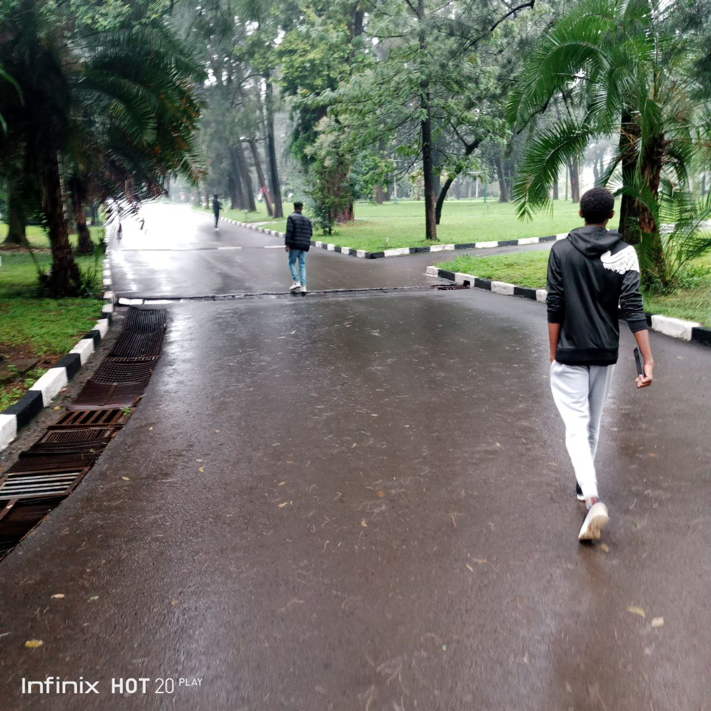
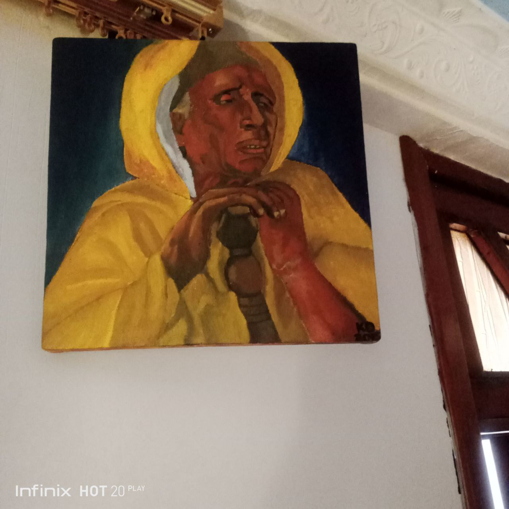

Photography
Photography is my passion, and I enjoy capturing the beauty of the world through my lens.
I've experimented with various photography techniques, including portrait, landscape, and street photography.
I'm skilled in using DSLR cameras and editing software like Adobe Lightroom and Photoshop to enhance my images.
I'm always eager to learn new techniques and explore different photography genres.
I believe that photography is a powerful tool for storytelling and self-expression.
Art
Art is another creative outlet for me, allowing me to express my imagination and emotions.
I love to call myself "KID" in my paintings, mostly because it makes me anonymous and
challenges the viewer to judge the paintings, instead of me.
I've experimented with various art forms, including painting, drawing, and digital art.
I'm skilled in using traditional art materials like acrylics and watercolors,
as well as digital tools like Adobe Illustrator and Photoshop.
I'm inspired by the beauty of nature and human creativity.
I believe that art has the power to evoke emotions and inspire others.
Photo Dump

